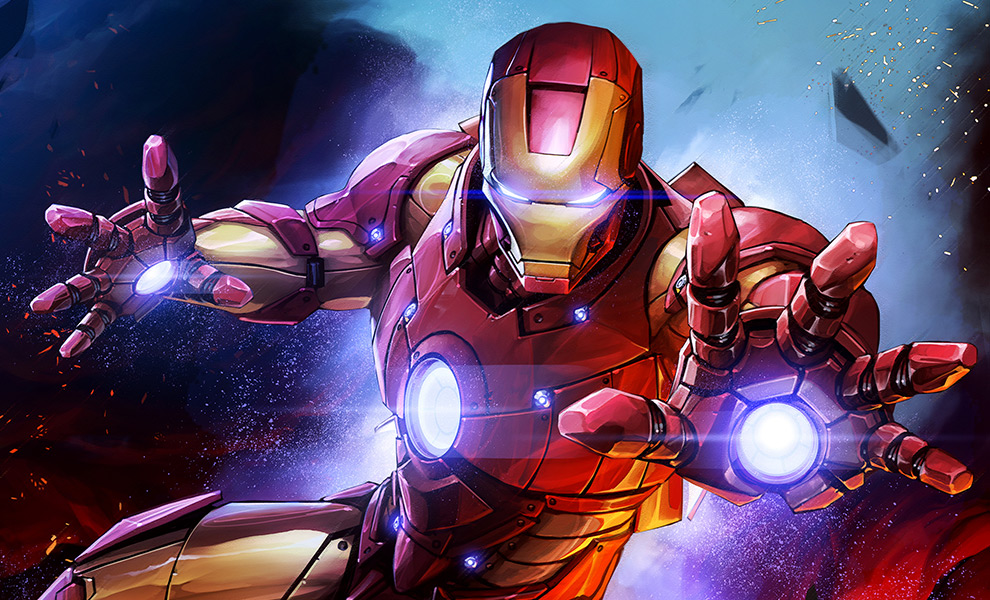
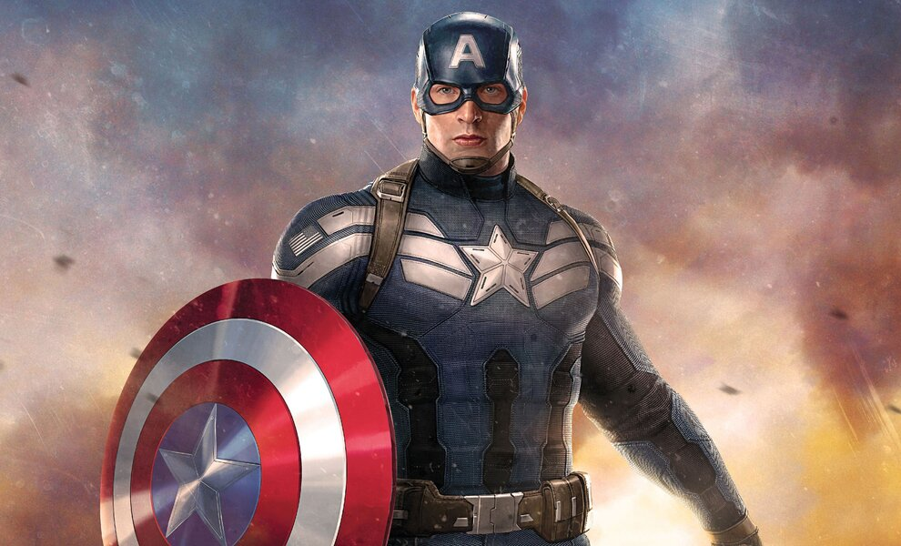
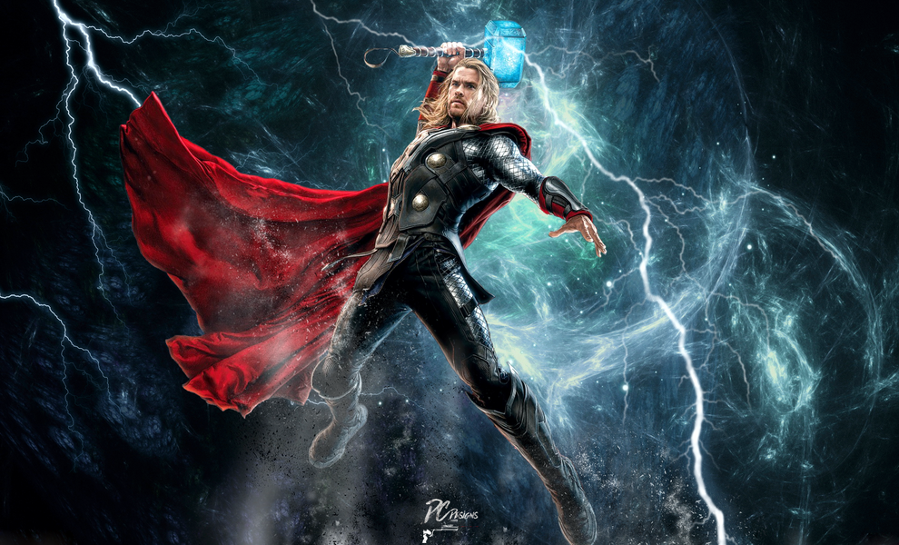
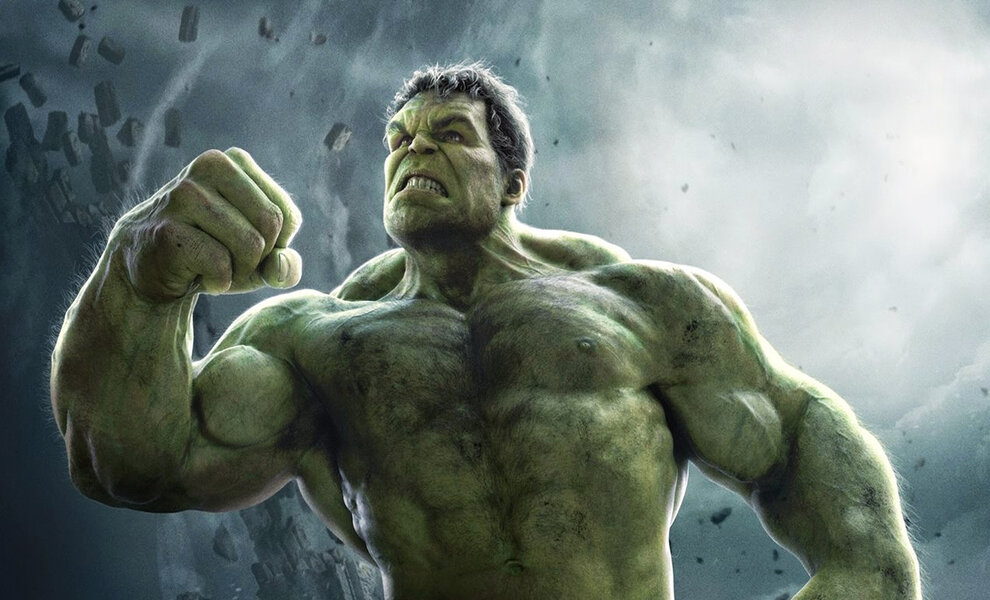
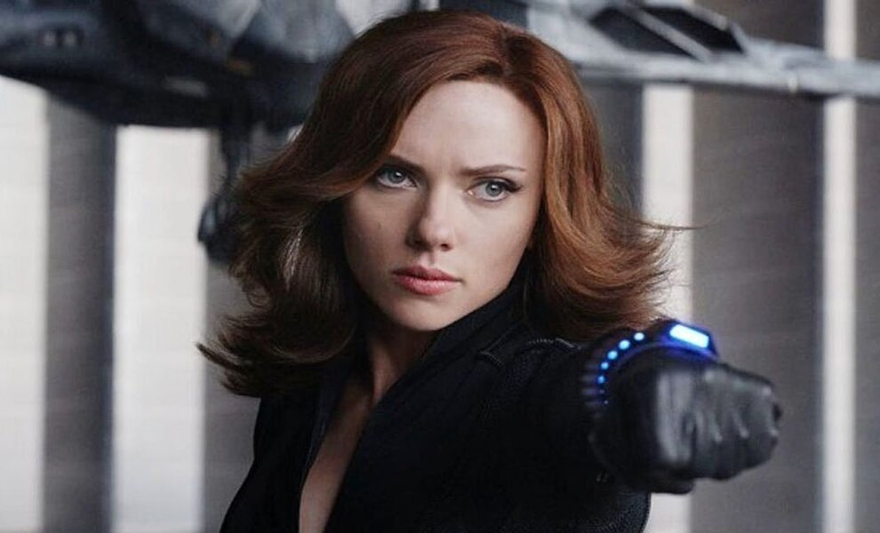
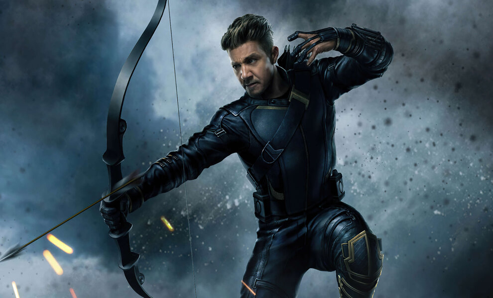
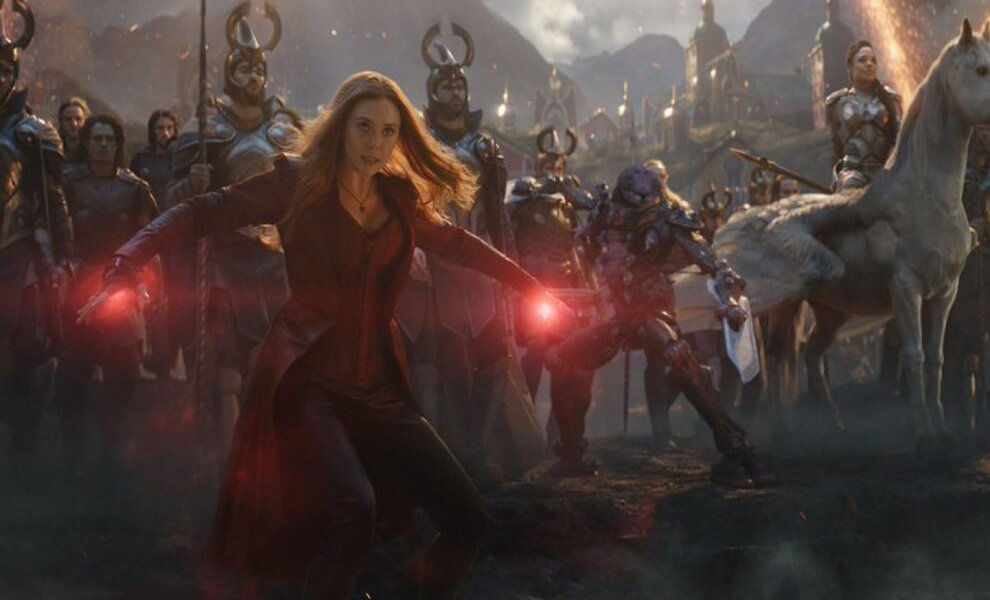
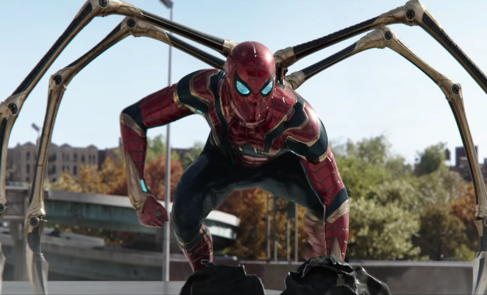
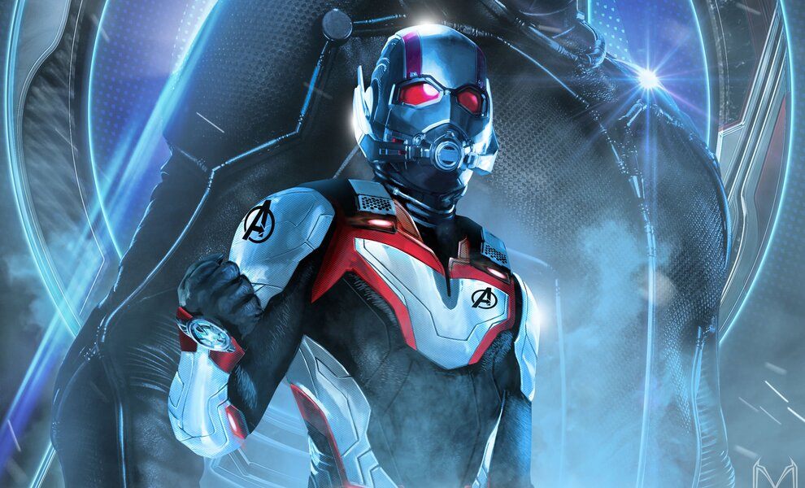
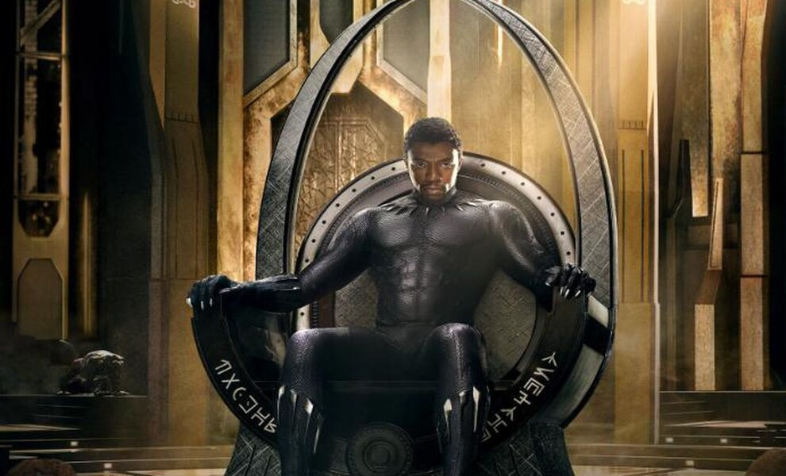

Iron Man - Robert Downey Jr.
- There is no Avengers without Iron Man, and there is no Iron Man without a traumatized and terrorized Tony Stark having a change of heart and transforming from an arrogant womanizing weapons dealer into a (still arrogant) armored hero who helps Nick Fury spearhead, and mold, the Avengers
- Tony's story came ferociously full circle when he gave his life to snap Thanos and his entire army out of existence using the Infinity Gauntlet, fulfilling a promise he'd made to, essentially, create (or, in this case, become) a "suit of armor around the world." And just from a franchise standpoint, it was Robert Downey, Jr.'s pitch-perfect performance as Tony, and Jon Favreau's comedy-drama blueprint for the first Iron Man movie, that laid the foundation for all the MCU films that followed
|
 |
Captain America - Chris Evans
- When creating America's first-ever Super Soldier, you have to consider the character of the man first and foremost. Courage, honor, and honesty are paramount, and that's why undersized, emaciated bully-basher Steve Rogers was the right choice to become the world's pioneering (and, as it would turn out, only) perfect Serum specimen. The world surely mourns the loss of Iron Man, but what of the giant void left behind by Captain America's overdue retirement?
- Rogers saved the world from both the Nazis and HYDRA in the '40s and then, after being frozen for decades, returned to help stop global incursions from all sides and fronts as a member of the Avengers, always acting as the team's stubborn conscience. Which meant wanting to do right, all the time, even if it meant losing. A born leader, a devout best friend, and an unparalleled hero, Cap is the paragon of virtue at the heart of the MCU.
|
 |
Thor - Chris Hemsworth
- Once the arrogant heir to all of Asgard, and then an exiled brat in need of absolution, Thor watched as his fallen adopted brother Loki waged war on a planet the God of Thunder had come to love and appreciate: Earth. Emotional, and often temperamental, Thor would continue to help out on Earth, vanquishing dark elves, HYDRA soldiers, Ultron drones, and more while trying to carve out his own path and destiny. One that didn't involve ruling over Asgard.
- Whether he's pining over his lost love, Jane Foster, bickering with Loki, getting into friendly scrapes with Hulk, or eating a ton of carbs out of guilt, Thor is the entertainingly excitable member of the Avengers.
|
 |
Hulk - Mark Ruffalo
- "We have a Hulk."Those words may have caused Loki to scoff at the time, but the God of Mischief wasn't smirking a few minutes later when he found his body thrashed to a pulp by scientist Bruce Banner's "always angry" alter-ego, the Hulk.
- Sure, Banner's unhinged green goliath, the result of a gamma radiation overload, may sometimes work against the Avengers, as there's rarely a reliable method on hand to stop the Hulk once he ramps up into rampage mode (unless you're Black Widow). But there's no arguing that Banner, as both genius and brute, is a bonafide double-threat. And now that he's fully merged the warring sides of himself into one form, he's near-unstoppable.
|
 |
Black Widow - Scarlett Johansson
- Natalia "Natasha" Romanoff, once an enemy KGB agent who trained to be an expert assassin at a young age as part of the Black Widow Program, found herself disavowing her old life - and country - and joining SHIELD at the urging and encouragement of Clint Barton. As Nick Fury's top covert operative, Romanoff helped keep tabs on Tony Stark and eventually joined the ranks of the Avengers when Loki launched an alien invasion on New York.
- Seeking redemption for her past misdeeds, and eventually sacrificing her life to help bring back all those lost in Thanos' decimation, Romanoff was devoted to her friends, dedicated to her missions, and deadly to a T.
|
 |
Hawkeye - Jeremy Renner
- If anyone knows he's probably the lowest rung on the ladder, powers-wise, amongst the Avengers, it's SHIELD agent and expert marksman Clint Barton. But devoted family man Barton's okay with that. Not that he won't risk his life or put his freedom on the line to protect the world or side with his friends during moments of Avengers infighting, but Barton's "bigger picture" is always his wife and kids.
- Which is why he turned into a murderous vigilante known as Ronin after they fell victim to Thanos' snap. Loyal and lethal, Barton is also headed to Disney+ in a series that will introduce Kate Bishop to the MCU.
|
 |
Scarlet Witch - Elizabeth Olsen
- Sokovian war orphan Wanda Maximoff eagerly signed up, along with her brother Pietro, for Wolfgang von Strucker's Mind Stone experiments, which gave her unequaled psionic powers.
- As arguably the most powerful hero in all of the MCU, Wanda only recently unleashed the full wrath of her abilities while battling Thanos in Avengers: Endgame, during the Battle of Earth, and then in the reality-altering series WandaVision where she and Vision are married in a world of rotating TV sitcoms.
|
 |
Spiderman - Tom Holland
- Gifted high-school student Peter Parker had barely ever stepped outside of Queens before being recruited by Tony Stark to help stop Captain America and his allies from protecting wanted fugitive Bucky Barnes. And with that, Parker, and his surrogate son-style relationship with Tony, became the beating heart of the MCU's Phase 3. As a child "thwipping" about in the deadly affairs of grown-ups (and Mad Titans), young Parker has defeated Vulture, Shocker, disgruntled Stark Industries technician Mysterio, and his own fears about asking MJ out on a date.
- But it was Parker's death during The Snap that hit Tony the hardest, and eventually convinced the Armored Avenger to join the others in a "time heist" to retrieve the Stones. Parker's wide-eyed optimism and eagerness to do good was exactly what the MCU needed, and exactly what the Avengers needed to undo all of Thanos' damage.
|
 |
Ant-Man - Paul Rudd
- The MCU loves an "unlikely" hero and they don't come more unassuming than flakey former thief Scott Lang. In the midst of trying to turn his life around after a stint in prison, Lang was recruited by scientist Hank Pym and asked to don Pym's old Ant-Man suit while working up a heist that would stop HYDRA from getting its hands on shrinking technology.
- Finding a new sense of purpose while wearing the suit, Scott would later survive Thanos' snap while in the Quantum Realm and thereby helping to discover that the micro-universe held the answers to recovering the Infinity Stones and restoring the countless lives lost. Whether incredibly small or 80-feet tall, Lang is the true wild card of the MCU. Always surprising his foes with - well - close-up magic.
|
 |
Black Panther - Chadwick Boseman
- After the death of his father, King T'Chaka, at the hands of terrorist Helmut Zemo, Prince T'Challa was forced to not only take over as ruler of Wakanda, but also take up the mantle of Black Panther, the superhuman protector of his people.
- With enhanced strength and speed gifted to him by his land's Heart-Shaped Herb and a high-tech suit made of vibranium, T'Challa is both an irresistible force and indestructible object, always ready to defend his country against ruthless smugglers, violent insurgents, and alien armies. A compassionate crusader, a noble monarch, T'Challa's legacy will never be forgotten. And neither will the life and career of the late Chadwick Boseman.
|
 |